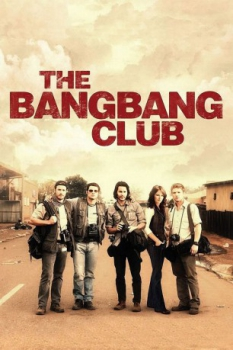

Repórteres de Guerra (2010)


Sometimes you get too close

Avaliação (TMDb):


6.8/10 (116 votos)
Avaliação (Usuário):
Outro Título:The Bang Bang Club
País:Canada, 106 minutos
Idiomas falados:Inglês, Português
Gênero(s):Drama, História
Diretor(s):Steven Silver
Codec:MPEG-2 (DVD)
Número: 4811
Sinopse:
Baseado em uma história real, o filme apresenta o drama de quatro fotógrafos que estão trabalhando na África do Sul durante os momentos finais do apartheid.
Elenco:
Malin Åkerman, Ryan Phillippe, Taylor Kitsch, Frank Rautenbach, Neels Van Jaarsveld, Russel Savadier, Ashley Friedlander, Patrick Lyster, Nelson Mandela, Lika Berning
Tipo de mídia: DVD R/RW,
Legendas: Inglês, Português, Sem Legendas
Alugado: Não
Tela: 2.35:1